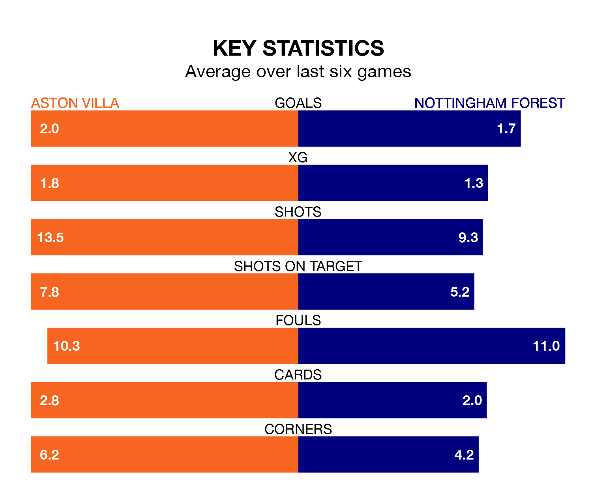

Aston Villa are heavy favourites to keep all three points at home in Saturday's kick-off against Nottingham Forest.
The Villa, who sit fourth in the Premier League with 25 games played, are priced at 1.4 to seal victory at Villa Park.
Sitting 12 places and 25 points behind them in the table, Forest are 6.0 to win with *Betting Company*, while the draw is at 4.6.
With 52 goals in 25 games so far this season, Villa are scoring more than average in the league with 2.1 goals per game. And they are conceding fewer than average, letting in 33 goals at a rate of 1.3 per game.
Forest, meanwhile, are below average scorers, with 1.3 goals per game, compared to a league average of 1.6. They have conceded 1.8 goals per game.
In the last 10 years, Villa and Forest have played each other on nine occasions. Villa won four of them, Forest two, and they drew three times.
On average, the Villa scored 1.9 goals and the Tricky Trees 1.6 in those matches.
Their last meeting was on November 5, when Forest won 2-0 at home.
The Villa's Ollie Watkins is the league's most creative player, racking up 10 assists in 25 appearances so far this season.
For the Tricky Trees, Anthony Elanga has set up the most goals, having laid on seven assists in 24 games.
The home side are in mixed form in the Premier League, with three wins and a draw from their last six games.
With two wins and a draw over that period, the visitors' form is worse – they have taken seven points from 18, compared to Villa's 10.
Villa's last match was on February 17, a 2-1 win against Fulham, with Watkins getting the goals for the Villa.
Forest beat West Ham United 2-0 last time out, also on February 17, with Callum Hudson-Odoi and Taiwo Awoniyi on the scoresheet.
Updated: 12:18 (UTC), 19/02/24